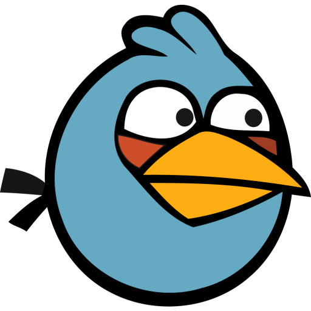

- Red
-

Sono cardinali rossi e non hanno nessuna abilitá particolare. Gli unici introdotti immediatamente.
- Blue (Jay, Jake e Jim Blue alias "The Blues")
-

Sono blu, piccoli e apparentemente poco distruttivi. Se peró viene toccato un qualsiasi punto dello schermo (touchscreen o click del mouse su schermi tradizionali) mentre uno di questi uccelli é in volo, esso si triplica e viene sostituito da tre uccelli identici, che continuano nella sua traiettoria seguendo un percorso "a pioggia". Particolarmente adatti a distruggere elementi in vetro e introdotti dal primo capitolo. In alcuni dei cortometraggi animati pubblicati da Rovio su Angry Birds toons come promozione di nuovi capitoli, appaiono come un gruppetto di tre giovani volatili.
- Yellow (Chuck)
-

I Chuck sono gialli, hanno forma triangolare e, se viene toccato un qualsiasi punto dello schermo (touchscreen o click del mouse su schermi tradizionali) mentre volano (prima che siano venuti a contatto con qualcosa), aumentano di velocitá e partono per la retta tangente alla parabola invece di continuare a cadere, formando eventualmente un'altra parabola. Distruggono con piú facilitá oggetti di legno, ed esordiscono nel primo capitolo.
- Black (Bomb)
-

Sono grossi e neri ed esplodono come bombe, o poco dopo aver toccato una superficie, diventando prima rossi per poco tempo, o immediatamente se viene toccato un qualsiasi punto dello schermo (touchscreen o clic del mouse su schermi tradizionali), anche in volo. Adatti soprattutto per distruggere elementi in pietra, sono introdotti nel primo capitolo.
- White (Matilda)
-

Sono grossi e bianchi, sono galline, e hanno l'abilitá, se viene toccato un qualsiasi punto dello schermo mentre sono in volo, di lasciar cadere un uovo, che cade in verticale ed esplode come una bomba appena tocca qualcosa. Dopo aver sganciato la bomba subiscono un'accelerazione diagonale verso l'alto, che puó essere a sua volta utilizzata per distruggere o sbalzare via elementi portanti della struttura. Esordiscono nel primo capitolo. Non sono presenti in Angry Birds Space.Angry Birds Star Wars é un videogioco multipiattaforma della Rovio Mobile, pubblicato l'8 novembre 2012. É basato sull'impostazione del celeberrimo Angry Birds ed ambientato nell'universo di Star Wars. I personaggi, di conseguenza, assumono l'aspetto dei personaggi piú famosi di Guerre stellari: gli Angry Rebels dovranno sconfiggere gli Imperial Pigs, rispettivamente parodie dell'Alleanza Ribelle e dell'Impero Galattico.
- Green (Al)
-

Sono verdi, con un lungo becco, sono tucanetti smeraldi e sono come boomerang: se viene toccato un qualsiasi punto dello schermo mentre volano, tornano indietro. Particolarmente efficaci nel distruggere oggetti di legno, hanno il vantaggio di poter colpire le strutture anche dopo averle sorpassate (potendo tornare indietro in qualsiasi momento). Sono introdotti dal terzo capitolo. Non sono presenti in Angry Birds Space.
- Big Red (Terence)
-

Sono rossi e quasi uguali ai Red ma quattro volte piú grandi e pesanti e dunque con forza distruttiva molto maggiore. Appaiono per la prima volta nel quarto capitolo.
- Orange (Bubbles)
-

Sono arancioni e nel momento in cui viene toccato un qualsiasi punto dello schermo si gonfiano istantaneamente, aumentando di molte volte il proprio volume, per poi sgonfiarsi come palloncini. Il loro utilizzo tipico consiste nel farli entrare in passaggi stretti, per poi farli espandere in modo da operare una grande distruzione. Se il loro effetto non viene attivato manualmente, si gonfiano automaticamente poco dopo aver toccato qualcosa. Sono presenti nell'ultimo episodio "Birdday Party" di Angry Birds, e nell'episodio "Ham'o'ween" di Angry Birds Seasons.
- Pink (Stella)
-

Sono rosa e hanno le dimensioni dei Red, ma il misero potere distruttivo dei Blue. Nel momento in cui viene toccato un qualsiasi punto dello schermo, sollevano con delle bolle di sapone loro stesse e gli oggetti vicini (maiali compresi). Dopo qualche secondo le bolle scoppiano e ricade tutto ció che era stato sollevato. Se questo effetto non viene suscitato manualmente si attiva in modo automatico poco dopo aver toccato una superficie. Sono gli unici uccelli del gioco disegnati con fattezze femminili, infatti sono le femmine del cardinale rosso. Sono introdotte nell'episodio "Back to school" di Angry Birds Seasons. Non sono presenti in Angry Birds Space.
- Mighty Eagle
-

É un'aquila bianca e nera di dimensioni enormi, in grado di distruggere con il suo peso ogni cosa presente nel livello, e funge da aiuto per i livelli difficili, che non si riescono a completare con i normali uccelli. Si attiva lanciando una scatoletta sulla struttura: l'aquila gigante si abbatte nel punto dove la scatoletta di pesce atterra. Dopo averla usata, si deve attendere un'ora per poterla riavere a disposizione per superare un nuovo livello, mentre é possibile riutilizzarla a piacere nei livelli giá terminati. Superare un livello con la mighty eagle non assegna alcuna "stella", e quindi, se si vogliono ottenere le relative stelle, il livello andrá rigiocato successivamente senza usufruire dell'aquila; tuttavia, il punteggio é calcolato come percentuale di distruzione: in caso si raggiunga il 100%, si é ricompensati con una piuma di aquila. La Mighty Eagle é una sorta di "minigioco" o "espansione" disponibile, a pagamento, solo in alcune versioni del gioco, con un acquisto in-app. Nel capitolo "Year of the Dragon" di Angry Birds Seasons, la Mighty Eagle á eccezionalmente sostituita dal Mighty Dragon e al posto della scatola di sardine viene lanciato un pesce dorato, é reso disponibile anche in versioni gratuite del gioco. In Angry Birds Space é presente la Mighty Space Eagle, che funziona in modo simile alla normale Mighty Eagle, ma invece di picchiare e sumbalzare al suolo con la conseguente distruzione di quasi tutto lo scenario, non essendoci suolo in "Space" dopo qualche secondo che le sardine si bloccano essa sbucherá fuori dal buco nero distruggendo solo ció che é presente nel suo raggio d'azione. In "Angry Birds Star Wars" é invece sostituita dal Mighty Falcon. Si attiva lanciando un uovo robotico sul campo di gioco. Dopo pochi secondi che ha urtato qualcosa o quando viene toccato lo schermo, esso esplode. All'interno della scenario compare il Millennium Falcon di Guerre Stellari, e comincia a compiere un giro attorno al campo di gioco, sparando una raffica di raggi laser sul punto dove é esploso l'uovo.
 Giacomo Cusinato & Rovio Mobile Production
Giacomo Cusinato & Rovio Mobile Production